OCR: sstne Bash List conte les and sl 16 21 MMsers/rattaete/Desktop/elasde vorispace/context/” Li echo "MILLS" i ls -1 */isers/raffoele/Desktop/cloude voripace/.claude/seit1/* Entesono.ni Rondi atene. ni Rond conati. Rendi chi-sono. ni Rend Libri Rend servizi.ni Read stite.s Tutto caricato. Sono pronto ad + DI Dioscene
Voglio farvi vedere come poter utilizzare questo approccio aumentando il livello di, non difficoltà, ma di complessità, se volete. Io uso il terzo, il terzo approccio dei tre che vi faccio vedere, o meglio, il terzo modo di implementare questo approccio. Ma arriviamoci con calma, in questo modo capite cosa c'è dietro. Mi sono inventato un task, diciamo che io ho questa esigenza. Ho un podcast, spero che voi lo seguiate già, se non lo seguite si chiama What's Next, vale la pena seguirlo. E qua diciamo nel mio workspace, quindi questo è il mio workspace, non è quello di prova che uso per il corso. Ho un progetto dedicato al podcast, vedete, dove c'ho per esempio tutti i transcript delle puntate. Quindi qua sono decine e decine di file con dentro centinaia di ore, diciamo, di trascrizione, di quello che ho discusso con gli ospiti. Vorrei provare a fare questa cosa, vedere se un argomento è stato trattato con più ospiti e provare a tirarci fuori un articolo per il blog, per esempio, perché ho pure un blog.
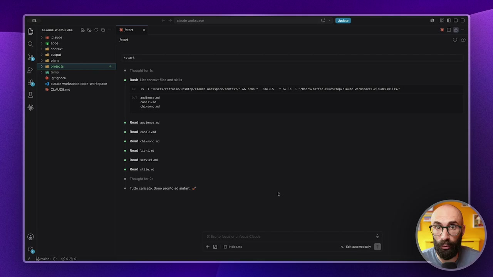
OCR: cinudo vortipace cuwvemwomece DCO rsvre > 16 temp + aitgnore Bash List conte es and ili 29 claude Workspace code-morkspace d CLAUDE md 18 -i MAIsers/rattaete/Desktop/elose vorkspace/context/ Li cho =_MILLS—" i ls -1 */isers/roffaele/Desktop/cloute vorispace/.claude/sei11/* Rendi chi-sono.nd Read Libri. Rendi serviziini Read stite.n “Tutto caricato. Sono pronto ad lutti. + Dsceno
Questo è un task abbastanza complesso, perché ovviamente significa andare a cercare nell'archivio di tutte le puntate, capire quest'argomento in quale puntata è stato trattato, mettere in relazione magari cose che hanno detto ospiti diversi, e così via. Quindi questo è il classico caso nel quale possiamo fare un lavoro di pianificazione prima di andare a eseguire vero e proprio. Non posso scrivere semplicemente, scrivimi un articolo per il mio blog, e così via. Devo fare quel lavoro prima e lo faccio nel modo più semplice, quindi andando a fare una serie di richieste a Cloud Code. Quindi facciamolo insieme. Ovviamente poi dopo vi faccio vedere il modo invece quello pulito che faccio io, che utilizzo io con delle skill che mi sono creato. Però partiamo in questo modo e gli diciamo, ho questa esigenza, ho un podcast dove intervisto un ospite a settimana e vorrei provare a scrivere un articolo su un argomento che è stato toccato da più ospiti in più puntate.
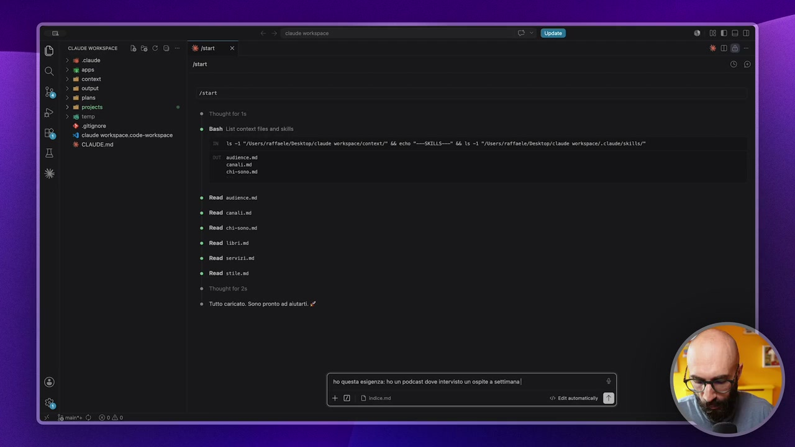
OCR: cause vorispnce rstne Bash Lis content les and ili 18 21 "MIsrs/rattaete/nesttop/elade vorkspace/context/ Li ch =—MILLS—" Uk ls -1 "/isers/roffaele/Desktop/clouge voripce/.clade/seil1/* ni Rendi chi-sono. nd Rendi Libri Rendi serviziini Read stite.na Though for 25 Tutto caricato. Son pronto ad altari. ho questa esigenza: ho un podeast dove ntrvisto un ospite a settimana | n + Ddcomi < Et iomatica (DD
Normalmente avremmo dato subito il prompt per lavorare, ma siccome abbiamo capito che sui task lunghi, sulle cose complesse, questa cosa non conviene farla, questa è ancora una fase di esplorazione. Quindi la prima cosa che gli posso dire è, mi serve che tu esplori le puntate registrate fino ad ora e che trovi i riferimenti a un certo argomento. E poi gli posso dire potrebbe essere che un ospite l'ha solo accennato, che con un altro invece è il tema principale e con altri ancora potrebbe essere stato trattato solo per una o due domande.
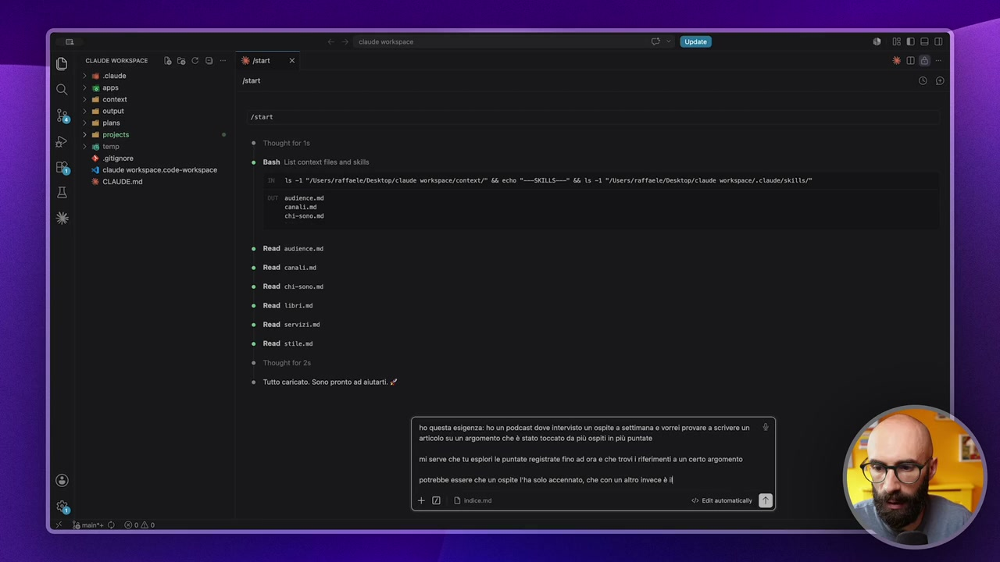
OCR: ciau worizpnce deco Bash List conte les an ili 18 I MMsrs/rattaete/Desttop/elaue vorkspace/context/ Li cho = MILLS—" Li ls -1 "/Users/raffoele/Desktop/cloute vorispace/.claide/ski114/* sagience. Entesono.n Road astence. ni Rond coni.nd Rendi chi-sono. nd Read Libri Rend serviziini Read sites Though for 28 Tutto caricato. Sono pronto ad alutrt. ho questa esigenza: ho un podeast dove ntervisto un ospite a settimana e vorei provare a scrivere un È articolo su un argomento che è stato toccato d più ost i più puntate mi serve che tu esplri puntato registrato fino ad ora e che tod riferimenti a un certo argomento. Rotrebbe essere che un ospite l'ha solo accennato, che con un altro invoca è il +0 Ddceni < Est tomatcaty.
Adesso gli propongo l'argomento e questa è una fase di esplorazione. Il primo argomento che voglio che tu controlli è, facciamo così, l'impatto dell'intelligenza artificiale sulla produttività in azienda e ufficio. Perché a memoria ricordo che questa cosa è stata trattata con un paio di ospiti, una puntata è stata anche molto verticale, ma vediamo quanto riesce a trovare Cloud Code in autonomia. E poi se vi ricordate io una cosa che faccio sempre è dirgli di farmi delle domande prima di procedere e quindi qua gli dico se ti servono maggiori informazioni o qualcosa non è chiaro, fammi pure delle domande prima di procedere nella ricerca.
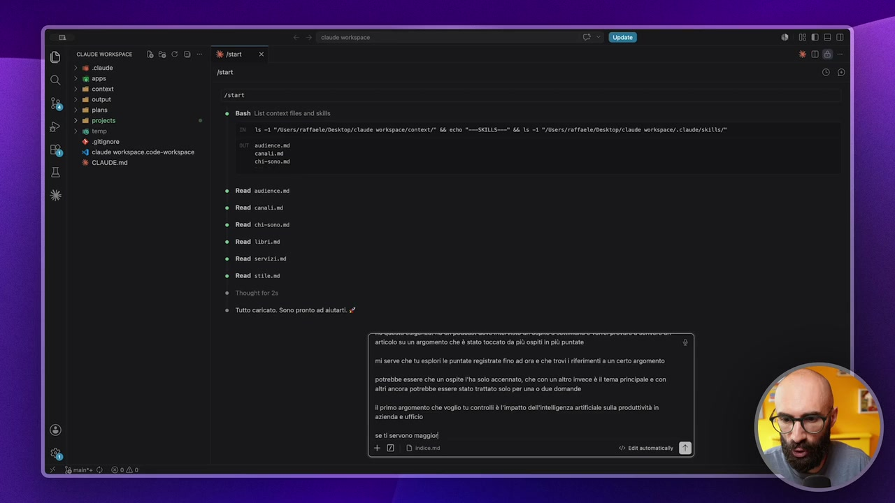
OCR: cinudo vortapnce o EDO cuwewomsece DE CO eran * 06 2 cile 38 0008 si content s patart > adi output 5 svn ad pins ni projects us 28 i MMlera/ratfaate/Desktop/clasde vorkapace/context/ Ki cho "—GKILLS—% GE 13 -1 */ibera/raffaele/Desktop/claude vorkapace/.clauae/seilU/* + glignoro passi 9 claude workspace code-morkspace caontiond E CLAUDE ma chiesonond @ Ginsh List context fs and sil Read sdtenc. n Read canini Rond chi-sono. Read Libri. Rand servizi.ni Rond stite.ni Thought for2s Tutto caricato. Sono pronto ad alutart. 4 tico su un argomento che è stato toccato da pi ospiti più puntate mi serve che tu espiori puntato registrato fino ad ra e che trovi riferimenti a un corto argomento. potrebbe essere che un ospite l'ha solo accennato, che con un ato Invece l tema principal e con altr ancora potrebbe essere stato tttao slo per una 0 ve domande © primo argomento che voglio t controll è l'impatto dell'ntligenza artfcilo sula produttività azien a ufficio 101 servono moggi +0 Ddcemi < Est tomaia (D
Siccome questa è una fase di esplorazione, stiamo dividendo in tre step, gli dico che non deve scrivere l'articolo, non scrivere l'articolo, fai solo la ricerca e dimmi cosa trovi. Invio, ora qua lui probabilmente per alcune cose ci chiederà l'autorizzazione su alcuni permessi, lo sapete, l'abbiamo visto diciamo in puntate precedenti, qua sta cercando il podcast, sta andando a cercare diciamo in varie cartelle, quindi deve capire qual è la cartella nella quale lavorare. Qua gli dico di sì, vediamo se ha trovato la cartella, project, podcast, transcript, probabilmente l'ha già trovata, però aspettiamo di vedere cosa fa. Ci sono 36 puntate, prima di lanciare la ricerca fammi capire meglio il formato. Quindi adesso sta leggendo una delle puntate, ve la apro così capiamo, project, podcast, transcript, apriamo per esempio una con il mio amico Matteo Agliotta, vedete? Quindi questo è come sono organizzati dentro i transcript, quindi proprio con i secondi e le frasi che sono state dette, è proprio la trascrizione del podcast diciamo presa da YouTube.
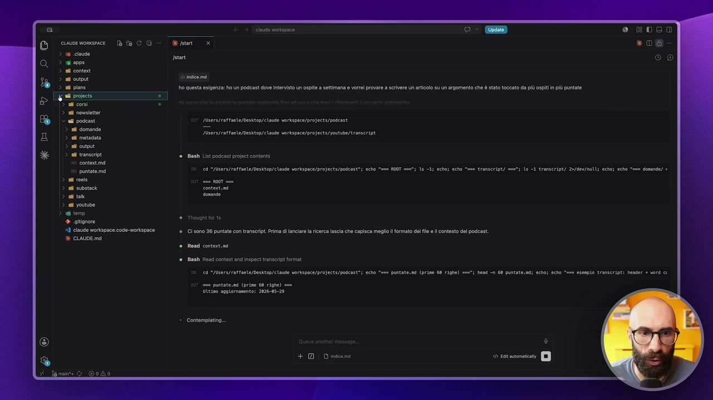
OCR: ) 18 claude > ai anpe > ad conte > nd output iam > adi pane ho questa esigenza: ho un podcast dove ntrvisto un ospite a settimana e voro provare a scrivere un articolo su un argomento che è stato tocato da più ospiti n più puntate Wed preci > ud cons > a nowsiottr © ed podcast Pusers/rftaele/pesktop/claude vorispace/oro)ects/poscast > ul domande E > ul metadata > ai output > all vransert List podcast project contents contone md puntate.me cd "Musers/rattaete/Desttop/ claude vrkspace/prajects/poscast"i echo “mme ROOT = echo; echo lm transeript/ mani ls -1 transcript/ 2/dev/nill; echo; echo "a donande/ © > adi eci ES > i substack context. > ad tak domande > rd youtube > 8 tomo 4 glignore x claude vorkspace code workspace Ci tono 86 puntate con ransript. Prima di aniare la ricerca lasca che capisca meglio ormato delle e contesto del podcast. de CLAUDE ma tar Tasers/rattaete/tesktop/clause vorkspace/projects/postube/transriot Rond contert.ni Bash Read conte and inspoct ransrip format cd ISsers/rattuela/Dusktop/ claude workspaca/projects/podcast*i echo “me puntate. nd (prime GA righe) mn"; hand =0 60 puntate.md; echo; echo "mm esempio transcripti besser + vord ci nea puntate, nd (prime 6A righe) sn Uttino aggiornamento: 2026-05-29 * Contempiatin. 8 os D
Ho esplorato la struttura, circa 400.000 Parole, capite che c'è bisogno di pianificare se devo lavorare su una cosa del genere, ovviamente voi magari potreste non avere un podcast, ma avete un'esigenza simile. Qua mi fa delle domande, mi dice quando parli di produttività in azienda e in ufficio quale perimetro intendi? Vi ricordate quando escono queste domande qua è il fatto di avere un'interfaccia come VS Code, perché altrimenti questa roba la dovremmo fare nel terminale che è un po' più ostico per alcuni, in realtà è la stessa identica cosa, solo che qua lo facciamo col mouse invece di farlo con la tastiera. Quindi impatto a livello di impresa, team, processi, ROI, adozione e così via, anche produttività individuale, per esempio professionisti, freelance, email, riassumerciate il più ampio possibile. Qua stiamo facendo una prova quindi se ti cazzi ti metto la seconda, ok? Gli dico anche produttività individuale per fargli fare una ricerca un po' più larga, solo ai fini dell'esempio, ok? Così abbiamo un esempio un po' più largo.
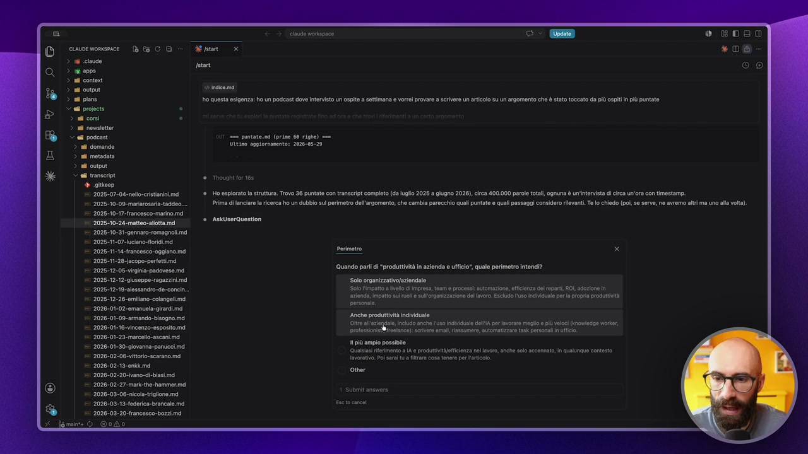
OCR: a o #8 claude Qi si cono tè VE can > ad pine hO questa senza a n podcast ove INtersto osi a selimana ori provare a srere un riso argomento che è sino cato di pi csi ip ponate SC ret È cade > a nei > el podcost nun puntate. nd (prime 60 righe) sn Uitino aggiornamento: 2026-05-29 3 come p:4 > ali metadata 3 1a cosa + cgitioep T00-0-0 pt è o nia stra Tovo 28 pitt con nc compl (da pio 2028 gugn 029 ca 400.00 per toa, una è uva di cis uo con ita coste re A "== "= "= Da 2026-01-09-armando-bisogno.md TAI PIERA More lire alza, incl anche lu Individual dll per lavorare meglio più oc now work, Son professioni iretnce): scrivere ema, issumere,stomaizzare task persero pioenei Fota AskUserquestion Perito other
Vediamo se ha qualche altra domanda, questo lo sta facendo perché vi ricordate io qua gli ho detto, apriamo la richiesta che gli ho fatto solo, non scrivi l'articolo, fai la ricerca e soprattutto gli ho detto se ti sembrano maggiori informazioni fammi delle domande prima di procedere. Questa cosa l'ho detto già in altre lezioni ma non smetterò mai di dirlo, è fondamentale, fondamentale, fondamentale. E' una delle grandi differenze tra utilizzare Cloud Code e utilizzare le vecchie diciamo tipologie di strumenti, di chatbot che usavamo in passato. Ricordatevi sempre di fare questa interazione, ok, col tool. Dice perfetto, perimetro chiaro, non scrivo l'articolo, faccio solo la ricerca, lancio in parallelo alcuni agenti che leggono a fondo tutte e 36 le puntate. Anche qua, cioè c'è ancora gente che mi viene a dire ma qual è la differenza tra usare Cloud nella chat tradizionale o usare Cloud Code?
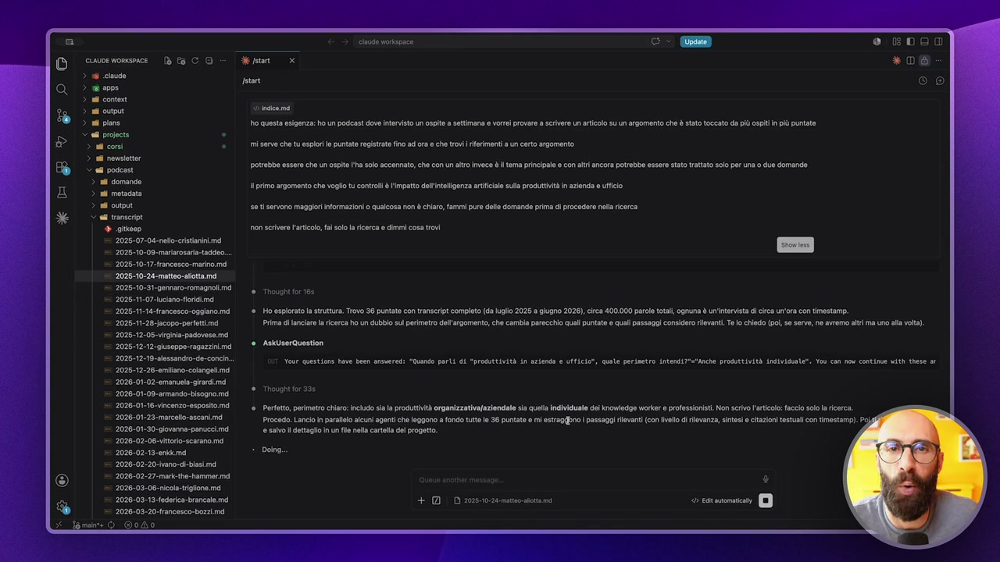
OCR: > n cinudo > ri aops a (È) Seni ta eroe > ai plan dd prec P vacosi 3 al never < dd possi > a domande BO > i rtedato > rd output Meo > sa tanscrte + gitsoo 2028-07-04 md 2025-10-00-mariarosari-tcdo. 2025-10-t7.tancesco marino. md 2028-10-24: matto-alta md 2025-10-5-gennro romagnoli md 2026-11-07 ciano aim 2025:11-18-rancesco-ogglano md 2025-11-28 Jcopo perfetta 2025-12-08 tra padovesemd 2028-12-12 guseppe-ragzzni md 2025-12-10-alessando-do-concn. 2028-12-26-emilano-colangelmd 2026:01-02-emanuea-girari md 2028-01-09-0mano. bisogno md 2028-01-16-vnconzo esposito 2026.01-23-marceto-ascanmd 2026-01-30-ivanma-panscci md 2026.02.06-vtori-scarano ma 2026-02-19 2026:02-20:iano-d-isl md 2026-02-27 - hammer 2028-03-06-nicltiglione md 2026:08-13-fderica-brancole md 2026.03-20.trancesco-bozzimd EIISÀ tar ho questa esigenza: ho un podcast dove ntervisto un ospite a settimana e Vore provare a scrivere un articolo su un argomento che è stato tocato da più ospiti n più puntate mi serve che tu espiori e puntato registrato fino ad oa e che trovi riterimenti a un certo argomento potrebbe essere che un ospite l'ha solo accennato, che con un altro invece è ema principal e con ari ancora potrebbe essere stato trattato sol per una 0 due domande ti primo argomenta che voglio i contrll è l'impatto delltligenza artificiale sula produttività in azienda e ufficio sati servono maggiori informazioni qualcosa non è chiaro, fammi pur dlla domande prima di procedere nella ricerca non sclver 'aricoo fi solo la rceca e dimmi cosa trovi Ho esplorato a stutura. Trovo 36 puntate con ranscrip completo (a luglio 2025 a giugno 2028), circa 400.000 parole total, ognuna è n'intervata di circa un'ora con imestamp. Prima dl anciae la ricerca ho un dubbio sul perimetro dell'argomento, che cambia parecchi quali puntata e qual passaggi considero rilevanti. Te o chiedo [i e serv, ne avremo alri ma uno all volta). AskUseruestion vaur questions have been ansueesi “Quando parli di “produttività in azienda e UFFICI", quale perimetro intendi T*a"Anche produttività inelvisue”. You can nov continse vit tese ar Perfetto, parimtro chiaro: nclud sia la produttività organizzativafaziendale sa cuol Individuale dl nomodge work e professionisti. Non scrivo l'artiole faccio soo la ricerca. Procedo. Lanci in parlieo alcuni agent che leggono a fond tutt le 36 puntato mi estrggbno | passaggi rilevanti (con livel di levanza intesi citazioni testuali con timostamp). Po e salvo dettaglio In n le nella cartella dl progetto. Doing 8 + DID 2025-10-24 matteo ata i =]
Guardate qua, lancio in parallelo alcuni agenti che leggono in fondo tutte e 36 le puntate. Se questa cosa avremmo dovuto farla in modo tradizionale sarebbe stata fatta in serie, quindi puntata 1, puntata 2, puntata 3, puntata 4. Se per leggere una puntata ci metti un minuto ci sarebbero dovuto 36 minuti, ok, invece nel momento in cui ci sono degli agenti e vanno in parallele tu stai accorciando il tempo. Quindi qua ne ha lanciato sicuramente due, non so se ne lancerà altri, però vedete qua c'è un agent batch A, altro agent batch B, quindi sono partiti in parallelo. Adesso qua sta leggendo le puntate. Ah, ecco qua, è partito anche un altro agent batch C. Questa cosa avete capito quanto è importante? Fatemela sottolineare mentre lui va avanti. E' una delle tante differenze, ma in questo corso ne sono emerse tante, però questo è un aspetto fondamentale, cioè quando siete nella chat di AGPT, ma anche di Cloud, se usate Cloud Chat tradizionale dal sito, sta roba non la potete fare perché non c'è la possibilità di lanciare degli agenti, ok?
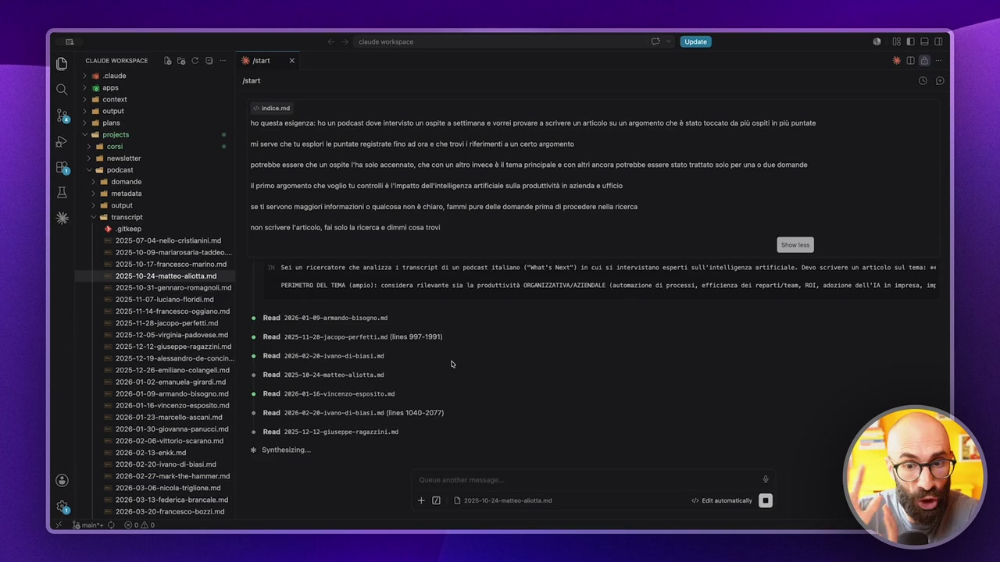
OCR: cuwoewonsmce TP CO = dept (CS ho questa esigenza: ho un podcast dove intristo un ospite a settimana e Vor provare a scrivere un articolo su un argoment che è tao tocato ca più ospiti n più puntate (È) a n si P i serve che ti espiori e puntato registrato fino ad oa e che trovi riterimnti a un corto argomento potrebbe essere che un ospite l'ha solo accennato, che con un altro Invece è ema principal e con alri ancora potrebbe essere stato trattato solo per una 0 due domande ti primo argomenta che voglio i contrll è impatto dell'tligenza artificiale sula produttività in azienda a ufficio sati servono maggiori informazioni qualcosa non è chiaro, fammi pure della domande prima di procedere nella ricerca Ye vai ansero + aiteeo non sclver 'aricoo fi solo la ricerca e dimmi cosa trovi 2025-07-04 -nellocristinilimd (si ] 2025-10-09-marfarosaiataddeo. Godin ira Ses un ricerentore che anulizza £ transerigt di un pogcast italiano ("nt's Next") {n cui si intervistaro esperti sull'intelipenza artificiale, Devo serivere un articolo sul tema: 2025-10-24-matteo-alott ma tar PERIMETRO DEL TEMA (ampio): comsigera rilevante sia la prosuttività ORGINIZZATIVA/AZIDIDALE (notonazione di processi, efficienza de reprti/tese, ROT, nozione GeLU'IA in inpreso; tot ‘2025-11-07ucano rim 2025-11-14. francesco ogglano ma 2025-11-28-jcopo-perfttimd 2025-12-08 virginia padovese md Read 2025-11-28-jacopo-perfetti.ne (Ines 967-1991) Read 2026-01-09-amando-bisogn.nd Rendi 2026-0-20-jvano-di-blasi.nd 2025-12.26eao.colanglid 2020-01.02-omanuorrc md 2020-01-09-rmando-biscgnoimé | ©. Reed 2026.01-i6vincenzoepoito.ni 2028-01-10-vncenzo-esostomd 1028-01-22-maesto-scanimd 2026-01-30 giovanna panucci md a. Read 225-12-12-gieope- ragazzini. 2026-02-08 vtoi-scerno. md 2028-02-1 nm Symieszino 2026-02-20 ivano di-lsimd 2028-02-27 marie -hammerind 5 2029-03-08-nieol-tigione ma 2020-03-18 edra- branca ma + DID 20861026 tt EI =] 2028-03-20 rancesco«brzi ma ELSA Road 2025-10-24-nsttec-aiotta.ni Rendi 2026-02-20-ivano-di-b1ast.nd (ins 1040-2077)
Invece siccome questo sta funzionando sul vostro computer in locale, questi file sono sul vostro computer, lo sta facendo in parallelo. Infatti vedete come sta andando veloce a fare questa roba qua. Adesso quando ha finito di fare questa lettura, aspettate, fatemi chiudere questo, quando ha finito di fare questa lettura probabilmente ci dirà queste sono le cose che ho trovato. Io qua taglio e vi faccio vedere direttamente quando arriva alla fine. Ecco qua, ha finito di fare tutta la sua bella analisi, che tra l'altro è durata non tantissimo, 58 secondi, ed è riuscito a farlo così veloce perché ha fatto degli agenti in parallelo. Mi dice, ho analizzato tutte e 36 le puntate, ho consolidato i risultati in un documento di ricerca, lo salvo nella cartella del progetto, quindi adesso da qualche parte qua dentro ci farà un file MD. Adesso vediamo, probabilmente non avendo una cartella output me la metterà dentro. Ah no, c'è la cartella output, quindi forse me la metterà dentro output. Però aspettiamo che me la fa così, lo apriamo. E questa qua è stata la fase di analisi, quindi abbiamo esplorato questo archivio. Adesso il mio archivio non è enorme perché 36 puntate sono già difficili da leggere a mano, non è che mi posso mettere a leggere a mano o comunque non mi ricordo un ospite che ho intervistato un anno fa, per esempio la prima puntata con Nello Cristianini di luglio e così via.
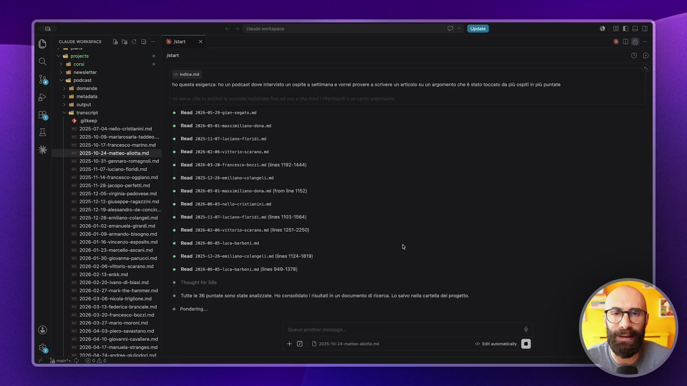
OCR: a cine vorkspace @ suorcnononce x ran © el projpets tari QQ datori >. al revsettr Giani 3 > et podcast pa ho questa esigenza: ho un podcast dove Interisto un ospite a setimana e ore provare ascrivere un atcolo su un argomento che è stato toccato da pù ospiti pù puntate > ai metadata > ad cupa Bj vere Read 2026-05-9-gio0-sgato.né ® tceo E 2025-07-04 2025-10-08 mariroearia td. Rondi 2025-11-97 -lucino-foriet. nd 2025-10-17 -rancesco-marino md * Enea sten 2025-10-31-gennaro-romagnolim 2028.1107 canori 2025:11-18-rancesco-oggiano md Read 2825-12-26-en1iano-cotagelt. né 2028-11-28copo-pertetimd 2025-12-05-igina-padovese md 2025-12-12 USSPPE-T0GRZEILMA Rand 2026-06-03-ello-cristianini.md 2025-12-10-alssando-de-concn. 2028-12-26-eiano-colangelim Read 2025-11-07 -\ano-ftor n ino 1109-1568) 2028-01-02-0manvel-rardì md 2028-01-09-armando- bisogno md 2026-01-16 vincenzo esposito me Road 2026-06-5-1sco-arbont.nd 2026:01-23-marcel-ascani.m 2026-01-30 -gloamna-panvcciimd 2026-02-06 vtoio-scarano. md 2026-02-19-enkmd 2026-02-20-wano-di-blstimd 2026-02-27 marte hammer md 2028-03-06-niol-tralone md 2026-08-13-fderca-brancalo md Persio 2026-08-20. {rncesco-bozimd 2026.03-27.maro moro 2026-04-03-piero-savastano md 2026-04-10-giovanni-cavllere md 2026-04-17 manvea-sranges md 7098-04-28. nnetma dii me dodo Rond 2026-0-01-anss at iano-tona. Rand 2026-0-20-francesco-bozi.s4 (Ines 1102-1444) Read 2026-5-01-aassiatiano-toa.é (rom ine 152) Bond 2026-02-06-vittorio-scaran.nd nos 1251-2250) Tutte lo 36 puntato sono stato analizzato. Ho consolidato | risuitti n documanto di ricerca. Lo salvo nella cartella dl progetto. 8 + ID 2025-10-26 matteo-aotta md i =]
Immaginate il vostro caso dove magari avete decine di clienti, per questi clienti avete centinaia di file che avete accumulato con dentro note, riunioni, presentazioni, preventivi, reportistiche e così via. Immaginate questa cosa quando la fate su delle basi di dati molto molto grandi il valore che ha. Qua sta ancora scrivendo il documento, quindi metto di nuovo pausa per un attimo così lo vediamo direttamente quando è pronto. Allora, finalmente mi ha fatto il documento, eccolo qua, dice che mi ha salvato questo documento nella cartella output, ci clicchiamo sopra, è un file md, sappiamo già che se vogliamo possiamo leggerlo così in formato carino oppure così in formato codice, a me non mi cambia niente lo leggo al volo così.
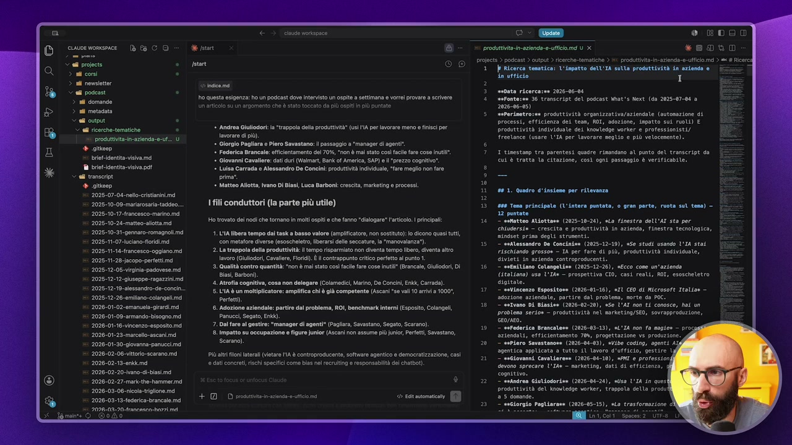
OCR: © el projpets > al cori > ul pewsltter ad podcast > adi domande > al metadata ei output . Sal ricerche-tomatiche . >. produttvitain-azionda-0-uî. + gitnop Brtintit vii md Ri dritdentta visiva pat > ed transcrpt + gitnop 2025-07-08-velo cristiani ‘2025-10.09mariarosaià-taddeo. 2025-10-17-rancesco- marino md 2026-10-24-matteo lieta md 2028-10-31-gennaro-romagnoli md 2028-11-07 vano ok imd ‘2025-11-14 francesco -ogglano md 2025-11-28-acopo-perfett.md ‘2028-12-08-vrginia- padovese md 2025-12-12-giusoppe-regazzini md 2025-12-19-aessandro-de-concin ‘2025-12-26-emilano-colangelima ‘2026.01-02-emanuela-grardi md 2026-01-09-armando-bisogno md 2026.01-16-vincenzo-esposito md ‘2026-01-22-marcello-ascanima 2026-01-20-giovanna-panvccimd ‘2026-02-06 ttoro-scarano.me 2026-02-18 -eokk md 2026-02-20 iano-diblasi.d 2026-02-27 - mart - hammer md 2026-0-06-nicole-trigione md 2026-03-18 federica brancale md 2078-08-20.frnenzco- har me edo | Q 2 psn start ho questa esigenza: ho un podcast dove intrvist un ospite settimana e Vorrei provare a scrivere n articolo su n argomenta che è stato tocato da più spit n pi puntate * Andrea Giuodori: a “trappola dll produttità* (us A per lavorare meno nici per iavoraro di più) * Giorgio Pagliara e Piero Savastano: passaggio a “manager di agent * Foderica Brancale: etfcontamonto de 70%, “no è ma stato così fc fare cos inul. * Giovanni Cavallre: dti uri Walmar, Bank o America, SAP l “prezzo cognitivo". * Luisa Carrada o Alessandro De Concin: produttività Individual, “fare meglio non fare prima * Matteo Alott, vano DI Biasi, Luca Barboni crescita, marketing e processi. 1 fili conduttori (la parte più utile) Ho trovato del nodi che tornano in mott ospiti ch fanno “dialogare l'articolo. principal 1. IA libera tempo dal task a basso valore (ampificator, non sostituto; lo icono quasi tutt, con metalore diverse (esoscheletr,Iberarsi dell sccatue, a manovalanza”) 2. La trappola della produttività: tempo risparmiato non diventa tempo bero diventa altro lavoro (Guldor, Cavaller, Ford) È l contrappunto critico perfetto al punt 1. 3. Qualità contro quantità: "non è mai sato co facile fare cose Inutil (Brancale,Giulodori, DI Blasi, Barboni) a. Atrofia cognitiva, cosa non delegare (Colamedic, Marino, Do Concin, En, Carrada) 5.LMIA è unmoltiliatore: amplfica chi è già competente (Ascani "e al 10 arv a 1000" Perttt). ‘©. Adzione aziendale: partir da problema, ROI, benchmark interni (Esposito, Colangeli, Panucci, Sogato, Eni. 7. al faro al gestire: manager di agent" Pagliara, Savastano,Sogato, Scarano) 8 Impatto su occupazione e figure Junior (Ascani non assume più uo, Perfetti, Savastano, Scarano). Pi alti ioni aterai tar A è controproducente, soiware agetico e democratizazione, cas 0 ti concreti, rischi spociii come bis nel recruiting o responsabilità del chatbor. +0 D possi projects > podeast > output) ricerche-tematene > 0 RO «BIO produttita-in-azienda-e-uffiio.ma > = 8 Ricerca 1 L'impatto dell'IA sulla prodettività in azionda e muoata ricercarse 2026-05-04 soFonte:se 36 transeript del podcast Miat's Next (da 2025-97-04 a 2026-06-05) superimetrosse produttività organizzativa/aziendate (autosazione di processi, efficienza del ten, ROL, adozione, impatto sui ruoli) E produttività individuale dei Knowledge worker e professionisti/ ‘reetance (usare L'A per lavorare meglio © più velocemente). 1 tinestasp tra parentesi quadre rimandano al punto del transcript da cui è tratta la citazione, così ogni passaggio è verificabile, #0 1. Quadro d'insieme per rilevanza 204 Tema principale (L'intera puntata, o gran parte, ruota sul tesa) — 12 portate — semattoo Aliottave (2025-10-24), La finestra dell'Ar sta per chiudersi» — crescita e produttività in azienda, finestra tecnologica, nindset prima degli strunenti. — seqlessandro De Concinime (2025-12-19), #Se studi usando L'IA stat rischiando grosso» = IA per fare di più, produttività individuate, aiuseti in azienda controproducenti. — svtniliano Colangelisa (2025-12-26), «fCco come un'azienda (italiana) usa L'TAs — prospettiva CIO, casi reali, ROI, esoscheletro digitate. — setinconzo Espositore (2026-01-18), «Il CEO di Microsoft Italia» adozione aziendale, partire dal probiesa, morte da POC. — etivano DI Biasive (2026-92-20), 50 L'AI non ti conosce, hai un problema serior = produttività nel marketing/SEO, sovrapproduzione, Groneo. - sefederica Brancaloss (2026-03-13), sL'ZA non fa magie» — pro aziendali, efficientamento 708, progettazione vs produzione. — sefiaro Savastanoee (2026-04-03), eVibe coding, agenti A agentica applicata a tutto il lavoro d'ufficio, gestire U — seGiovanni Covalieresa (2026-04-10), «PMI © professionf devono sprecare 1'IMe - marketing, dati di efficienza cognitivo. — seandrea Giuliodorisa (2026-04-24), aUsa L'TA in ques Produttività del knovLedge vorker, trappola della protui a 5 domande. — eeGiorgio Pagliara (2025-05-15), sLa trasformazione d
Vediamo un attimo cosa c'è fatto, allora il quadro di insieme per la rilevanza mi ha messo gli ospiti che hanno trattato quella cosa, quindi Matteo Aliotta, Alessandro Deconcini, Emiliano, Vincenzo, Ivano, Federica Brancale, questa è una puntata dove si parla tanto di questa cosa qua, infatti pensavo soprattutto a quello, anche con Andrea Giulio Dorico, ovviamente un esperto di produttività, e poi ha cenato anche con altri ospiti, quindi ha diviso quelli dove è il tema principale, quello dove è trattato in modo sostanziale, quello dove è accennato velocemente, poi diciamo assente e così via. Fili conduttori, ha trovato un po' di cose ricorrenti, l'IA libera tempo dai task, la trappola della produttività, qualità contro quantità, atrofia cognitiva e così via. Ovviamente adesso questo è un esempio, non è una situazione vera e propria, però partiamo da questo e proviamo adesso a fargli fare il piano. Quindi gli dico, perfetto, ora che hai esplorato tutte le interviste, possiamo procedere al secondo step.
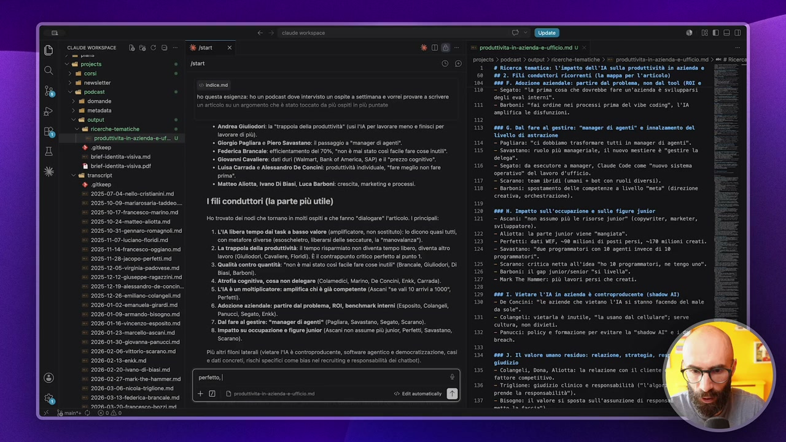
OCR: cuuvewomsece Db î6 CO < projecta > nl così > a nesettr ad podcast > adi domande > al metadata > el cupi . Sal icorche-tomatiche . >. produttvitain-aionda-0-ut. + gitnop retti me Ri brietgentta visiva pot > el transcrpi + gitnep 2025-07-08 -vellocrisininimd 2025-10.09-mariarosaiatadcde. 2028-10-17-rancesco-marino md 2025-10-24-matteo-allota me 2028-10-31-gennaro-romagneli md 2025-11-07 uan ori imd 2025-11-14 trancesco-ogglano mi 2025-11-28 -acopo-perett.md 2025-12-05 virginia: padovese.md 2025-12-12-glusoppe-ragazzini md 2025-12-19-aessandro-de-concin ‘2025-12-26-eriano-colanglimd 2026-01-02-emanuela-girardì md ‘2026-01-0-srmando-bisogno md 2026.01-16-vincenzo-esposto md ‘2026-01-22-marcello-ascani md 2026-01-30-giovanna-panvcciimd ‘2026-02-06 -ttoro-scarano. me 2026-02-18 -eoik md 2028-02-20 iano-diblasi.m ‘2028-02-27 martho- hammer md 2026-03-06-nicole-trigione md 2026-03-18 ederica-brencle md 9078-08-20 .Arneneco- bari md Qoso, e. a e por produtitit-i-azienda-e-uffico md U projects > podcast > output) ricerche-temat o questa esigenza: ho un podcast dove intrvist un ospite a settimana e Vr provare a scrivere ‘n articolo su n argomenta cha è stato toccato da pù spit n più puntate mi + Andrea Gluodori: a “rappola dll produttità* (us A per lavorare meno iii per avoraro di pi) * Giorgio Pagliara e Piero Savastano: passaggio a “manager di agent * Federica Brancale: efciontamento de 70%, "no è ma stato così fc fare cose inuli. * Giovanni Cavallre: dti uri Walmar, Bank o America, SAP e l “prezzo cognitivo", 1 fili conduttori (la parte più utile) Ho trovato del nodi che tornano in mott spit che fanno “dialogare l'articolo. principal LIA libera tempo dal task basso valore (ampificator, non sostituto; lo icono quasi tut, con metafore diverse (esoscheletr,Iberarsi dell seccatue, a manovalanza) 2. La trappola della produttività: tempo risparmiato non diventa tempo iero, diventa altro lavoro (Giulodor, avallere, Ford) È l contrappunto rito perfetta punt 1. 3. Qualità contro quantit: "non è mai sato così facile fare cose Inutil" (Grancale,Gilodori, DI Blasi, Barboni) ‘a. Atrofia cognitiva, osa non delegare (Colamedic, Marino, o Concin, En, Carra). 5.LMIA è un moltiplicatore: amplfica chi è già competente (Ascani "e al 10 rv 000° Pertti. ©. Adozione aziendale: partir dal problema, ROI, benchmark interni (Esposito, Colangeli, Panucci, Sogato, Eni. 7. al faro al gestire: "manager di agenti" (Pagira, Savastano,Sogato, Scarano). 8. Impatto su occupazione e figure Junior (Ascan non assume più uo, Perfetti, Savastano, Scarano). Pi alt fon Latera (vieta A è controproducente, software agetio e democratizazone; cas 0 i concreti, rischi spociici come bis nel recruiting o responsabilità del chatbot. perttto| + Opositita inerente riticn © 60 naomi al # Ricerca tematica; l'impatto dell'IA sulla #6 2, FIÙA conduttori ricorrenti (la noppa per l'articoto) nre F. Mozione aziendale: partire dal problesa, non del tool (ROI e " Segito: "la prima cosa che dovrebbe fare un'azienda è svilupparsi degli eval interni". — Barboni: "fai ordine nei processi prima del vibe coding*, UTA amplifica le disfunzioni. nnt . dat fare al gestire: “aonager di agenti" « inelzamento del Uivetto di astrazione — Pagliara: "ci dobbiamo trasformare tutti in manager gi agenti". — Savastano: ruolo più manageriale, Il nuovo mestiere è "gestire la delega”. — Segato: da esecutore a manager, Claude Code cose operativo” del lavoro d'ufficio. — Scarano: teom Ibridi (unani + bot con ruoli diversi). — Barboni: spostamento delle competenze a Livello "meta" (direzione creativa, orchestrazione). nia 4. inpatto sull'occupazione e sulle figure junior — Ascant: "non assuno più le risorse Juntor® (copywriter, morketer, sviluppatore). - Altotta: la parte junior viene “mangiati — Perfetti: doti WEF, -90 milioni di posti persi, +17 nilioni creati. — Savastano: "due programantori con 10 agenti invece di 10 programator — Scarano: critica netta all'idea “ho 10 programaatori, ne tengo uno”. — Barboni: {l gap Junior/senior "st Uvetta — Hark The Nasmer: più lavori persi che creati. see 1. Vietare L'TA in azienda è controproducente (shadow AI) — De Concinii "le aziende che vietano l'IA si stanno facendo del male da sole”. — Colangelt: vietaria è inutile, “la usano dal cellulare"; serve cattura, non divieti. — Panueci: policy e formazione per evitare la "shadow AI" e reach. #52 3. 1° valore unano residuo: relazione, strategia, rel giudizio " Colangeli, Dona, Altotta: la relazione con il cliente] fattore competitivo. — Triglione: giudizio clinico e responsabilità (* prende la responsabilità"). — Bisogno: il valore si sposta sull'assunzione di
Gli diciamo che vogliamo trattare solo, vogliamo includere solo quelli che l'hanno trattato come tema principale, quindi di ignorare tutti gli altri. Allora fammi un, ah no, dopo gli dico fammi un piano, gli dico prima quello che voglio ottenere. Quali erano gli altri due? Modo sostanziale e accennato. E ignora chi l'ha trattato in modo sostanziale o chi l'ha solo accennato. Poi per quanto riguarda gli argomenti, qua diciamo me ne ha messi vari, ovviamente è un esempio e questa lezione non può durare 50 minuti, quindi scegliamone per esempio tre.
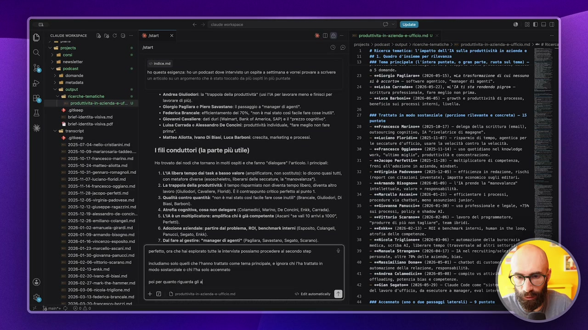
OCR: Brini vii md Btatintt via lt > ed transcrpi * gicoop 2025-07-08 -nelo cristi 2025-10-09 mariarosaia-taddeo.. 2025-10-17-rancesco-marino md 2026-10-24-matteo-alleta md 2028-10-31-gennaro-romagnoli md 2026-11-07. vano ok md 2028-11-14-trancesco-ogglano mi 2025-11-28 -acopo-perfett.md ‘2025-12-08-vrginia-padovese md 2025-12-12-glusoppe-ragazzini md 2025-12-19-aessandro-de-concin. ‘2025-12-26-emiano-colanglimd ‘2026.01-02-emanuela-girardi md 2026-01-09-armando-bisogno md 2026.01-16-vincenzo-esposito ma ‘2026-01-22-marcello-sscani md 2026-01-30-giovanna-panvcci md ‘2026-02-06 -vittoro-scarano. me ‘2026-02-18 -ookkmd 2026-02-20 iano-di las. 2026-02-27 -marthe- hammer md 2026-0-06-nicolatrigione mi 2026-03-18 ederica-brancale md 2098-08-20 .Arneneco- horn ma ho questa esigenza: ho un podcast dove intrvisto n ospite a settimana e Vorrei provare a scrivere ‘n articolo sù n argomento che è stato toccato da pù spit n più puntate * Andrea Gluiodori: a “rappola dll produttità* (us A per lavorare meno nici per tavorare di pi) * Giorgio Pagliara e Pier Savastano: passaggio “manager di agent * Faderica Brancale: efcentamento de 70%, “non è ma tao così fc faro cos nuti * Giovanni Cavallre: dti uri Welmar, Bank o America, SAP el “prezzo cognitivo”. * Luisa Carrada o Alessandro De Concin: produttività Indvdual, “are meglio no fare prima * Matteo Alott, ano DI Biasi, Luca Barbont crescita, marketing 0 processi. | fili conduttori (la parte più utile) Ho trovato dei nodi che tornano mott ospiti che fano "dialogare" l'articolo. principal IA libera tempo dal task basso valore (ampllicator, non sostituto; lo icono quasi tut, con metafore diverse (esoscheletr,Iberarsi dell seccatue, a manovalanza”). La trappola della produttività emo rsparmiato non diventa tempo libro, dienta ato lavoro (Giulodor, avaller, Ford) È il contrappunto rtc perfetto al punto 1. Qualità contro quantità: “non è ma stato così cile fare cose int" (Brancal, Gluodori, Di Blasi, Barboni) Atrolla cognltiva, cosa non delegare (Colamedii Marino, De Conc, Enkk, Cara), LIA è un moltiplicatore: amplifica chi è già competente (Ascani "se val 0 avi 1000 Pertt Adozione aziendale: partire dal problema, ROI, benchmark interni (Esposito, Clangeli Panucci, Sogato, Eni. 7. faro al gestir: "manager di agent" Pagliara, Savastano,Sogato, Scarano) perfetto, ora che ha esplorato tutt le interviste possiamo procedere al secondo step + DI D possi © cronica e. produtti in-aziendo-e-ufio ma U 18 Ricerca tematica: l'impatto dell'IA sulla produttività in azienda e 1ì 69.1. Quadro d'intiene per rilevanza 13. sie eso principato (L'intera puntata, È 5 domande. 23. — seGiorgio Pagliaraso (2026-05-15), sla trasformazione di cul nessuno 34 è accorto@ = softuare agentico, “nanager di agenti". 24" antuisa Carradana (2026-05-22), #L'IA I sta rendendo pigro» — scrittura professionale, fare meglio non prina. 25. - enlaca Barboniss (2026-06-05) — growth e produttività di processo, beneficio sui processi interni; livella. — sefrancesco Marino (2025-10-17) — delega della scrittura (esail), outsourcing cognitivo, IA "rivelatrice di nagegne”. eeluciano Floridisa (2825-11-07) — risparnio di tempo, sgentica per Îe seccature d'ufficio, usare la velocità contro la velocità. — sefrancesco Opglanosa (2025-11-14) — uso quotidiano nel inoutede vork, "ultimo nigLio", produttività e concentrazione. eedacopo Perfettis (2025-11-28) — sottiplicatore di conpetenza, trent all'adozione in azienda, nindset. — seVirginia Padovesosa (2025-12-05) — efficienza in redazione, rischi (report con citazioni inventate), inpatto economico sugli editori. - esdrmando Bisognose (2025-21-89) — L'IA prende la "sanovalanza” intellettuale, valore = responsabilità. — eemtarcetlo Ascanieo (2026-01-23) — efficientare { processi, procedure via chatbot, meno assunzioni juntor. — eeciovanna Panuccios (2825-01-38) — uso professionale e legale, +75% sui processi, policy € shadow AL. — seVittorio Scaranoss (2826-02-86) — lavoro del programatore, ‘produrre di più non tagliare", team ibridi. - etnie (2026-02-13) — ROI € benchaark interni, husan in the cop, atrofia delle competenze. - seticota TrigLioneso (7026-93-96) — autosazione della burocrazia medica, scriba AI, Uberare tenpo (trasversale ad altri settori stanuela Strangesse (2026-04-17) — 1A nel recrusting/sel personale, oltre 70% delle aziende, bias. — eomassini iano Donava (2026-05-01) — chatbot di custone autonazione della relazione, responsabilità. - evandrea Colamedicisa (2026-05-08) - compito vs attivi offioasing, potenzia bias e competenze. suGian Sogatosa (2026-05-29) — Claude Code cose “sist del lavoro d'ufficio, da esecutore è manager, eval inter est Accannato (uno 0 due passaggi laterali) — 9 puntate
Gli dico che voglio li ha libere il tempo dei task a basso valore, la trappola della produttività e facciamo il D, atrofia cognitivo. Per quanto riguarda gli argomenti voglio includere solo, facciamo così A, B e D. A, B e D. Ignora pure tutti gli altri. E poi vediamo se ci ha messo qualche altra cosa, perché è bello lungo questo file. Schede dettagliate per puntata, vabbè questo lo userà lui per avere accesso, quindi gli abbiamo detto chi deve prendere come ospite, quindi se deve prendere Matteo Aliotta scenderà e prenderà Matteo Aliotta. Vedete, ci ha messo pure le citazioni e così via. Qua sono ancora i dettagli dell'ospite. Vedete che lavoro che sta facendo? C'è già questo che è la versione più scadente, ha fatto sta roba assurda, perfetto.
OCR: cioe women I î C O Sei prjecte > nl così > a newsiettr < el podicost > all domande > al metadata x el vpi . Saf icorche-tomatiche . 3) produttivitain-azionda-0-uf. 4 gitnop renti vii md Ri briotidentta visiva pot > el transorpi + gitnop 2025-07-04 -nelocrisininimd 2028-10-09-marirosariataddeo.. 2028-10-17-rancesco-marino md 2025-10-24-matteo lieta md 2028-10-31-gennaro-romagnoli md 2028-11-07 ivano ok md ‘2025-11-14-francesco-ogglano md 2025-11-28-acopo-perettimd 2025-12-05 virginia padovese md 2025-12-12-glusoppe-ragazzini md 2025-12-19-aessandro-de-concin. ‘2025-12-26-emillno-colanglima 2026-01-02-emanuela-girardi mi 2026-01-09-2rmando-bisogno md 2026-01-16 -vincenzo-esposito me 2026-01-23-marcelio-ascani md 2026-01-30-giovanna-panvcci md ‘2026-02-06 vttoro-scarano. me 2026-02-13 -enkkmd 2026-02-20 iano-diblasi.md 2026-02-27 - mart - hammer di 2026-03-06-nicoe-trigione mi 2026-03-18 ederica-brancale md 9096-08-20 .Aranenzco-hz7i md Vodo e par ho questa esigenza: ho un podeast dove intriso un ospite settimana e Vorrei provare a scrivere ‘n articolo si n argomento che è stato tocato da più spit n più puntate * Andrea Gluliodori: a “trappola dll produttività (us A per lavorare meno inici per taworare di più) * Giorgio Pagliara e Piero Savastano: passaggio a “manager di agent * Federica Brancalo: efcientamento de 70%, “non è ma stato così fc fare cos inul. * Giovanni Cavallre: dti uri Welmar, Bank o America, SAP) l “prezzo cognitivo". * Luisa Carrada Alessandro De Concini: produttività Individua, "faro meglio no fre prima * Matteo Alotta, ano DI Blasi, Luca Barboni crescita, marketing e processi. | fili conduttori (la parte più utile) Ho trovato dei nodi che tornano mott ospiti ch fanno "dialogare" l'articolo. principal 1. IA libera tempo dal task basso valore (ampiricator, non sostituto; lo dicono quasi tutt, con metalore diverse (esoscheletr,Iberarsi dell seccatue, a manovalanza”) 2. La trappola della produttività: tempo risparmiato non diventa tempo bero, diventa altro lavoro (Giuldor, Cavaler, Ford) È | contrappunto critico perfetto al punto 1. 3. Qualità contro quantità: "non è mai sato così facile are cose Inutil" (Brancale,Gilodori, DI Blasi, Barboni) ‘a. Atrofia cognitiva, cosa non delegare (Colamedic, Marino, a Concin, En, Carrada) 5. LIA è un moltiplicatore: amplfica chi è già competente (Ascani "e al 10 rv a 1000" Pertot ©. Adozione aziendale: partir dal problema, ROI, benchmark interni (Esposito, Colangeli Panucci, Segato, Eni. perfetto, oa che ha esplorato tutte l Interviste possiamo procedere al secondo step Ineluciamo solo quell che anno trattato come tema principale, ignora chi l'ha trattato in modo sostanziale 0 hi ha solo accennato pol pr quant riguarda li argomenti voglio includere sol A, 8, D. onora pure tutt ll + DD Deodato icon ESSI) projects > pogcast e. DIGHE produit in-azienda-e-uffico ma U output) rcerche-tematche > produttvita-in-azenda-e-ufficio.m > = # Ricerca 18 Ricerca tematica: l'impatto delU'TA sulla produttività in azienda e 172. h8 Tena principato 996 Piero Savastano (2026-04-13) " Tnteltipenta "a Consuno* come UtsCity: costi basssssiai rispetto condivisibiti. — 16:48) “La ricchezza viene oal fatto che tutta una serie di attività faticose, ripetitive, a basso interesse possono essere delegate. E anche se gli abboramenti costassero centinaia di euro al nese, vale assolutasente la pena per il lavoro che ti risparaia.* — (18:53) "che succede quando invece di 10 programmatori te ne Servono due con 19 agenti pagati poche centinaia di euro al nese? Che succede se paragoni questo costo col costo det lavoro e i diritti sl lavoro sacrosanti?* — 20:34) “A parità di organico che santient, con gli agenti ti aspetti che siano molto piÙ produttivi, lavoriamo tutti molto di più in termini di produttività, però invece di fare tu lo fa Wi, e tu stai a gestire: è un ruoto più manageriale. — (33:49) L'automazione non è uno switch. Tn alcuni east 10, in alcuni 58, in alcuni 70, Come decido quanto autosatizzo? È 11 nuovo mestiere: ‘cosa posso lasciare andare, cosa devo controllare, dove lo controtto.® — {1200:11) "L'aumento di produttività vuol dire ausento di beni, vuol dire collasso dei prezzi di questi beni. Il nodo centrale dei rossini decenni è questa produttività estrena." ord Giovanni covatiere (2026-10) — seSintesiiea Inpatto del 'IA sul morketing aziendale e sulla produttività di chi lavora nel marketing/comunicazione. Differenza tra operatività automatizzabile € pensiero strategico, deti concreti di efficienza, concetto di "prezzo cognitivo dell'IA" (la trappota della produttività). Adozione nelle PRI italiane. C cepunti chtaverme — Differenza operativo/"smanettone”i Va pensiero strategico valore si sposta sulla strategia. — Le SHIU di Claude come salto di qualità per l'output 1A per l'analisi dati nell'agvertisino. — dati: Watnart 50% costi distribuzione, Bank of Ameri carico call center, SAP 300 niltoni risparmiati. — Adozione "a pacchia di leopardo"; \'Itatta ha grand rischia il gap formativo. — "Prezzo cognitivo*/trappola della produttività: paul spariscono, Burnout. — “Romi d'oro della sperimentazione” VITA abbassa 11 A
Ora gli dico, non scrivere direttamente l'articolo, ma fammi un piano di come vuoi procedere. Vorrei che l'articolo includesse 3-4 citazioni precise dell'ospite e poi per il resto invece usasse i loro spunti come punti di partenza per poi costruire dei ragionamenti più ampi. E qua gli dico che in generale però fai sempre riferimento esplicito all'ospite. Qui gli dico per esempio includi frasi come ha accennato Matteo Aliotta a proposito di, in modo tale da dare sempre, come dire, di dire sempre qual è l'ospite che ha detto quella cosa.
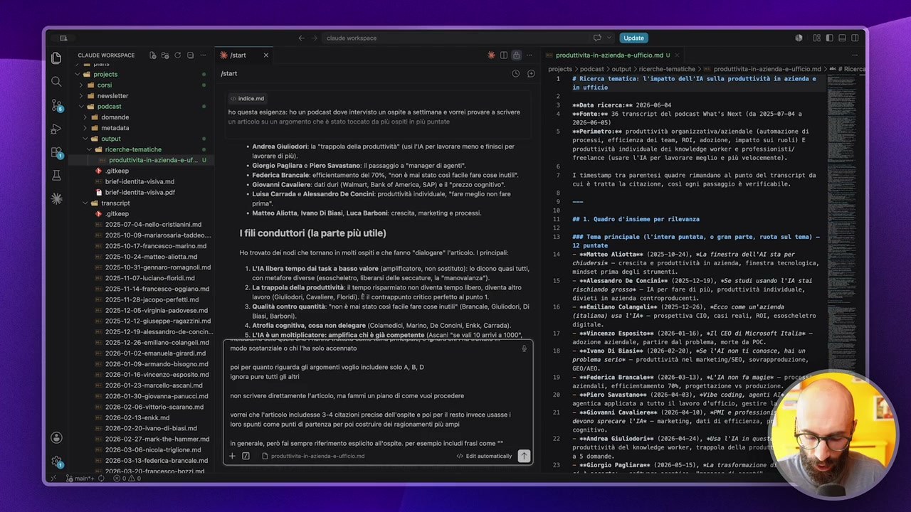
OCR: Sei proecte > a così > il newsittr > adi podcast > al domande > al metadata > i output . Sl icorchetomatiche . Broduttit-in-azionda-e-. + gitnop retin-a mi Ri brieticentta visa pat i transcrpi + gitnep 2025-07-08 -nelo cristiani 2025-10-08-mariarosaia ade. 2028-10-17-rancesco-marino md 2026-10-24-matteo allea md 2028-10-31-gennaro-fomagneli md 2026-11-07 vano rim ‘2025-11-14-trancesco-ogglano mi 2025-11-28-acopo-perfettimd ‘2025-12-08-vrginia-padovese md 2025-12-12-glusoppe-ragazzini md ‘2025-12-19-alessandro-de-concin ‘2025-12-26-emiano-colangli ma ‘2026-01-02-emanuela-girardi md 2026-01-00-armando-bisogno md 2026-01-16 -vincenzo esposto md ‘2026-01-22-marcello-ascanimd 2026-01-30-giovanna-panvccimd ‘2026-02-06 vttoro-scarano.mé 2026-02-18 -eokkmd 2026-02-20 iano-diblasi.md 2026-02-27 -mar-th- hammer md 2026-03-06-nicoa-trigione md 2026-03-18 ederica-brancale md 096-08-20.frneazco- barn Dec ho questa esigenza: ho un podcast dove intrvist un ospite a settimana e vorrei provare a scrivere un articolo su Un argomento che è stato occato da più spin più puntate * Andrea Gluiodori: a “rappola dll produttità* (us A per lavorare meno inici per lavorare di più) * Giorgio Pagliara e Piero Savastano: | passaggio “manager dl agent * Faderica Brancale: efciontamento de 70%, “non è mai tao così fc fare cos inut * Giovanni Cavallre: dti uri Wakmar, Bank of America, SAP) il "prezzo cognitivo. - Luisa Carrada o Alessandro De Concin: produttività Indidual, “fare meglio no fare prima + Matteo Alotta, ano DI Bisi, Luca Barboni crescita, marketing e process. 1 fili conduttori (la parte più utile) Ho trovato del nodi che tomano i mott ospiti che fanno “dialogare l'articolo. principali 1. IA libera tempo dal task basso valore (amplicator, non costiuto; lo dicono quasi tut, con metafore diverse (esoscheletr,Iberarsi dell seccatue, a manovalanza”) 2. La trappola della produttività: tempo risparmiato non diventa tempo [bero diventa altro lavoro (Giulogori, aller, Ford). ontrsppunto crt perfetto al punt 1. 3. Qualità contro quantità: "non è mai sato col facile fare cose inut" (Brancale, Giulodori, DI Bisi, Barboni) ‘. Atrofia cognitiva, cosa non delegare (Colamedic, Marino, Do Concin, En, Carra) 5.LIA è un moltglcatore: amplifica ch è già competente (scan a val 10 arrivi 1000 modo sostanziale 0 chi l'ha solo accennato Gi pol per quant riguarda li argoment voglio includere solo A, B; D Ignora pure tutt ll tr non scler irttamente l'articolo, ma fammi un pian di come Wuol procedere vorrel che l'antico Incudesse 3-4 citazioni precisa dell'sit 0 po perl resto Invece usasse loro spunti come punti di partenza per po costruire dl ragionamenti più ampi n general, per ai sempre riferimento esplicito allspite. pr esempio Includi trasi come ** + DD Dposatrininazente ricami cao e. O) produit -azenda ufficio ma U projects > podeast > output) ricerche-tematehe > nè produtti 1° 8 Ricerca tematica; l'inpatto dell'TA sulla produttività în azionda e in ufficio 3. seduta ricercazse 2026-06-04 sofonte:se 36 transeripr del podcast Miat's Next (da 2025-07-04 a 2026-06-05) superimetrosse produttività organizzativa/aziendate (automazione di processi, efficienza del tea, ROL, adozione, inpatto sui ruoli) E Produttività individuale dei Knowledge worker e professionisti/ freetance (usare L'IA per lavorare meglio © più velocemente). 1 tinestasp tra parentesi quadre rimandano al punto del transcript da cui è tratta la citazione, così ogni passaggio è verificabile, #0 2. Quadro d'insieme per rilevanza 20 Tema principale (L'intera puntata, o gran parte, ruota sul tene) — 12 portate — eefatteo Alfottame (2025-10-24), La finestra dell'Ar sta per chiudersie — crescita e produttività in azienda, finestra tecnologica, nindset prima degli strusenti. — sewlessandro De Concinime (2025-12-19), #Se studi usando L'IA stat esschiando grosso» = 1A per fare di più, produttività individuate, aivseti in azienda controproducenti. — svtniliano Colangelisa (2825-12-26), «fcco cose un'azienda Uitoliana) usa L'IAx — prospettiva CIO, casi reali, ROL, esoscheletro digitate. — setincenzo Espositore (2026-01-18), «Il CFO di Microsoft Italia» — ‘adozione aziendale, partire dal probiesa, norte da POC. - selvano DI Biasive (2026-02-20), #50 L'AI non ti conosce, hai un problema serio = produttività nel marketing/SE0, sovrapproguzione, GEo/neo. — sefederica Brancaloss (2826-03-13), «L'IA non fa magie» — pro aziendali, efficientamento 708, progettazione vs produzione. — sefiaro Savastanose (2026-04-83), eVibe coding, agenti A agentico applicata è tutto il lavoro d'ufficio, gestire 1 — seGiovanni Cavalieresa (2026-04-10), «PMI © profession| devono sprecare l'IMo — marketing, dati dl efficienza, cognitivo. " aeqndrea Giuliodorisa (2026-04-24), sUsa L'IA {n ques Produttività del knovledge vorker, Erappola della protui a 5 domande. — eeGiorgio Papliaraso (2026-05-15), sLa trasformazione
Quindi l'idea della citazione precisa, proprio per trasparenza, per onestà, dire in questa chiacchierata con Matteo Aliotta è emerso questa cosa qua e così via. Scusate, questo lo sposto alla fine perché sono sempre dell'idea che va messa alla fine. Non scrivi direttamente l'articolo, fammi un piano preciso di come vuoi procedere, poi aspetta il mio ok sul piano prima di procedere con la scrittura. Perfetto, diamo gli invio, chiudiamoci questo che non ci serve anche se lo possiamo aprire in qualsiasi momento. Adesso quindi gli abbiamo detto cosa vorremmo ottenere, siamo nella seconda fase, quella di pianificazione.
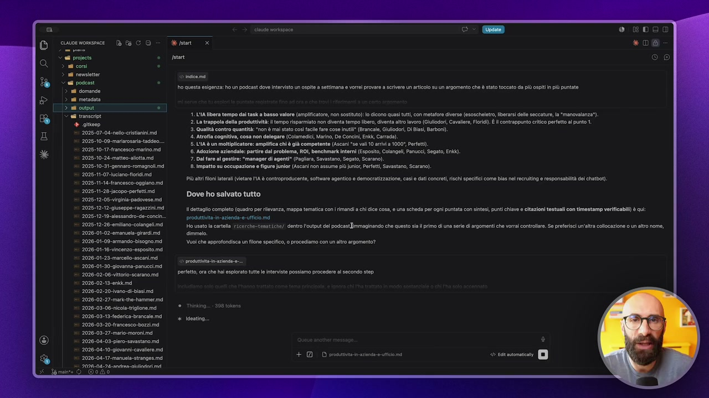
OCR: a © suotvomne DECO Ci crono QU vico ala fa Cana Pes Sia em, dita pia 24 a SOC SRO 5051 e gt pie nota a. SIZE IS ER: STI =. SR, 24. e STEZZE 2016.0603 pro naso CE CINI tari ho questa esigenza: ho un podeast dove ntervisto un ospite a settimana e vorei rovare a scrivere un articolo su n argomento che è stato tocato da più ospiti n più puntate 1. LIA libera tempo dal task basso valore (amplificatore, non sostituto; lo dicono qusi tutt, con metafore divers (esoschletr, Iberarsi dell seccature, a "manovalanza". 2. La trappola della produttività: tempo risparmiato non diventa tempo bero diventa ato lavoro (Gluledoi, Cavaliere Fior. È contrappunto critico erftto l punto 1. 3. Qualità contro quantit: "non è mal sato cos fac fare cose Inutil" (Brancale, Ciuoderi, DI Biasi, Barboni) ‘4. Atrofia cognitiva, cosa non delegare (Colamedic, Mario, o Concii, En, Crrda) 5. LIA è un moltiplicatore: amplifica ch è già competente (scan 0 vali 10 ar a 1000", Pertort). 8. Adozione aziendale: partir de problema, ROI, benchmark Interni (Esposito, Colangli, Panuce!, Segato, Ed. 7. Dal fare al gestire: manager di agenti" (Pagiaa, Savastao, Segato, Scarano). 8. Impatto su occupazione figure junior (Ascani non assume pù uo, Parfett, Svastano, Scarano) Pi li filoni laterali Vitara A è controproducente, software agentio e democratizzaione, csì e dati concrti, rischi specifici come bas nel recruing e responsabilità de chatbot). Dove ho salvato tutto ll dettagio compito (quadro per rilevanza, mappa tematica con | rimandi a ch ice cosa, una scheda por ogni puntata co sintesi, punt chiave 0 citazioni testuali con timestamp verificabi) è qu prodattvit-in-azienda-e-utfcio md Housato la carte. ricerche-tenat{che/ dentro l'output del podcast immaginando che questo sia primo di una sere di argomenti che oral controllare. Se proerisc uatra collocazione o un tro nome, dimmelo. Vuoi che approondisca un filone specifico, 0 procediamo con un altro argomento? E TA perfetto, ora che ha esplorato tutt lo Interviste possiamo procedere al secondo step 4 Identino + DID prostate elim
Vediamo i singoli passaggi che lui propone di fare e a quel punto, avendo i singoli passaggi, possiamo intervenire sul singolo passaggio. Questo ci fa risparmiare tempo per dopo, perché magari ci ha scritto un articolo, ci ha messo 5 minuti per scriverlo, 10 minuti per scriverlo. Non ci piace, fa cacare, gli dobbiamo dire mi dispiace, lo devi riscrivere da capo perché non hai citato le persone che avresti dovuto citare. Questo invece serve per essere molto chiari su quello che vogliamo ottenere e poter andare a lavorare in maniera minuziosa su ogni singolo passaggio del piano. Anche qua metto pausa, così non vi faccio vedere questo tempo morto, vi faccio vedere direttamente il risultato finale. Ecco qua, ha iniziato a propormi il piano, mi dice ottimo, secondo step chiaro, prima di scrivere ecco il piano preciso, ho incrociato i filtri che mi hai dato, quindi tema principale e solo argomenti A, D e B, intorno a cui ho costruito una struttura. Vedete come il piano è fondamentale perché aveva un sacco di roba da cui andare a pescare. Non i 36 file ma tutta quella roba che si era tirata fuori. Quindi mi dice perfetto, ho selezionato Aliotta, Deconcini, Colangeli, Brancale, Carrada e così via.
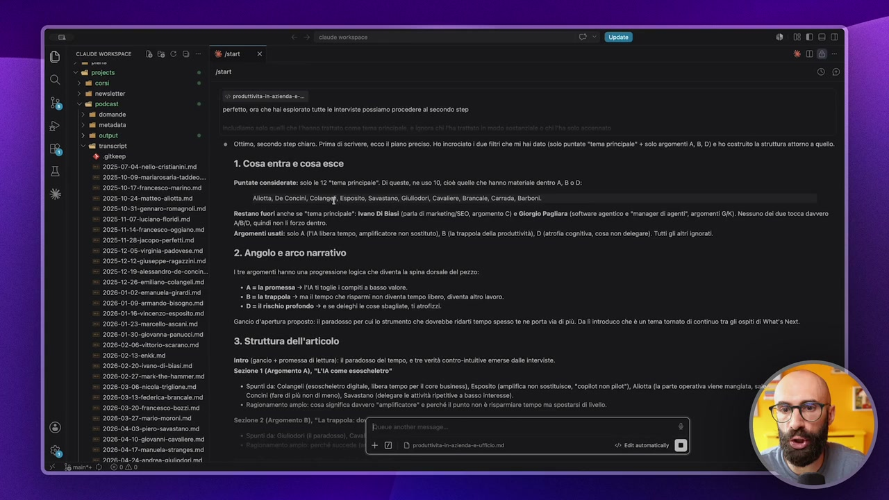
OCR: a ole" olii Peri fa Cana Va SME = m la ossa î 4 n ana Frsnaan SEN noe tina + 4... CE sì EE Si “aa ----. Zia i: 44 i cia “na ‘2076-04-24. i mani O @0A0 1 prati azinaac perfetto, ora che ha esplorato tutte le Interviste possiamo procedere al secondo step ‘®. Ottimo, secondo ste char. Prima di scrivere, ecco piano preciso. Ho lnrocito | ue ir che mi hl ato (slo puntate "tema principle” + soi argomenti AB, D) e ho costru la struttura attorno a quello. ‘1. Cosa entra e cosa esce Puntate considerate: sole 12 “tema principale”. DI queste, ne uso 10, lo quelle che hanno materiale dentro A, 8 0 D: ‘Aiotta, e Coni; Colangfi, Esposito, Savastano, Gulodor, Cavaliere, Brancale, Carada, Barboni Restano fuori anche so tema principal”: \ano DI Blasi (parla i marketing]SEO, argomento C) e Giorgio Pagliara (software agentio "manager di agent, argomenti GK. Nessuna de du tocca davvero ‘4/80, uind non i frzo dentro. Argomenti usati: solo A (NA libera tempo, amplficatore non sosti), a rappola dll produtti), D (troia cognita, cosa non delegare). Tutt gl altr ignorati. 2. Angolo e arco narrativo tro argomenti hanno una progressione logica che diventa la spina dorsale del pezzo: + Az ia promessa > NA i togle | compli a basco valor. = la trappola > mal tempo che risparmi non diventa tempo libero, diventa ar avro rischio profondo > e se deleghe cose sbagliate ti atroizz. Gancio d'apertura proposte: paradosso percui lo strumento che dovrebbe ridrt tempo spesso te ne porta via di più. al itroduco che è un tema torato di continuo tagli ospiti i What's Nt. 3. Struttura dell'articolo intro (gancio è promessa di letra: paradosso del tempo, tre verità contro inte emerse dalle interviste Sezione 1 (Argomento A), "LIA come esoscheletro* * Spunti da: Colangellesoschletro digitale, Ibera tempo per core business), Esposito (amplifica non sostituisce, "cop nn let) lotta la parte operaia vine mangiata, Conein (tar i più non di mano, Savastano (delegare le attività ipettivo a basso ntress Ragionamento ampio: osa significa davvero "amplficatore” perché l punto non è risparmiare tempo ma spostarsi i ivlo, Sezione 2 (Argomento B), "La trappola: d + DI D prostate tomi
L'angolo narrativo, l'angolo e l'arco narrativo sarà questo, promessa, trappola, rischio, struttura dell'articolo, intro, l'IA come esoscheletro, sezione 2 la trappola dove finisce il tempo che risparmio, sezione 3 cosa non delegare mai e così conclusione. Poi trattamento delle fonti, faccio 3-4 citazioni, quindi mette quella di Colangeli su esoscheletro digitale, quella di Giulio Dori su usano l'IA, convinti di lavorare meno, quella di Barboni, se lavoriamo non impariamo e così via. E poi qua sono degli spunti, la voce, lo stile, il formato se l'è presa dal mio contesto, su questo diciamo vedete tutta la lezione sul contesto, la lunghezza proposta, assunzioni da confermare, quindi destinazione, il blog, quindi qua mi dice prima di procedere, vedete a questo serve un piano, mi fa delle domande finali, mi dice allora innanzitutto deve finire sul blog? Sì, nel mio caso sì, anche se è un esempio, però se non è per il blog e magari è per, che ne so, me l'ha chiesto un giornale o un altro blog di un amico o lo devo mettere nella newsletter
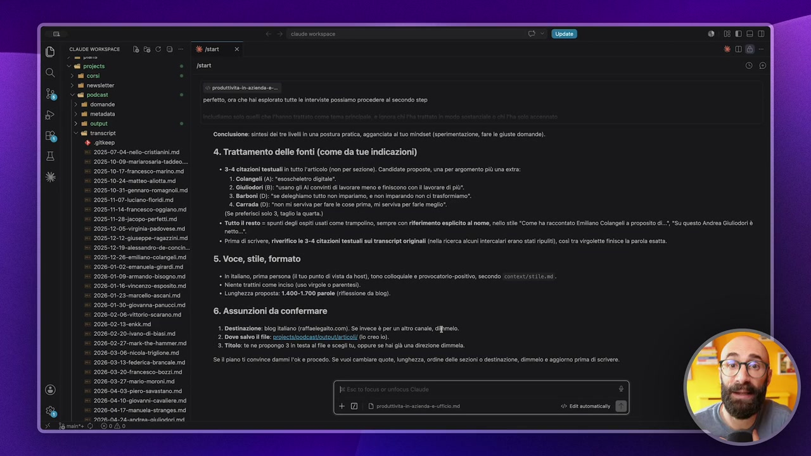
OCR: a © suon ECO osi pasa ta cat Fe ss eni m lana piera î 2-44 nn «Te Sa i SEI pe tina 3 a.
o sul mio blog in inglese potrebbe essere e così via. Poi mi dice dove risalvo il file, gli possiamo dire che mi crea questa cartella articoli, gli dico no, la voglio in output, oppure il titolo me li proponi tu e qua per esempio, siccome questo è un piano, gli diciamo alcune cose che non ci vanno, che vogliamo modificare. Allora gli diciamo per esempio, me le sto inventando queste modifiche, argomento A, liaco mesoscheletro, argomento B, la trappola, argomento C, cosa non delegare mai, allora ecco le modifiche che voglio. Nella conclusione metti una sezione con gli errori da non fare, perfetto. Poi le citazioni, Colangeli, Giulio Dori, Barboni, Carrada, faccio nelle citazioni, elimina quella di Giulio Dori, è un esempio, ovviamente Andrea se stai guardando questo video è un esempio, bellissima puntata quella con Andrea, vedete la. Voce, stile e formato, gli dico lunghezza dell'articolo vai oltre le 2000 parole,
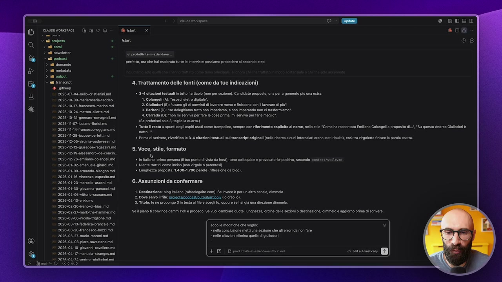
OCR: a ® cuaune worxspace - ( Be CO cc a asa fa ac ves cle= ea n lan pina È 4. ii AE 500105 ore pine Sei i roi nine bra 4. ansa, ess a EE: Son 41 sei lillo ti. Cota ia perfetto, ora che ha esplorato tutt le Interviste possiamo procedere al secondo step 4. Trattamento delle fonti (come da tue indicazioni) * 3-4 cltzioni testuali in tutto laicolo (non per sezione). Candidato propost, una per argomento più una extra: 1. Colangeli (A): “esoscheletro digitale”. 2. Glullodori (8); "usano gli A convinti lavorare meno e finiscono coni lavorare i più". 3. Barboni (D): "e eleghiamo tutto non Impariamo, e no imparando nor ci rstormiamo': ‘4. Carrada (O): “non mi serviva per fre l cos prima, mi serviva per farle meglio”. (Se proferisi slo 3 agio la quarta) + Tutto resto = spunti egli ospt usati come trampolino, sompre con riferimento esplicito al nome nello st "Come ha raccontato Emiliano Colangl a proposto. * Prima i scrivere, riverifico lo 3-4 citazioni testuali su ranseript originali (nola ricerca alcun itecalr eran stati ripult), csì tra vgoltt nsco la parola esatta. 5. Voce, stile, formato - i ta pm person to put i vita host ion cao prosa psti secondo GoNei/stie:a. * lente vati come nc (uo ego 0 parents) È Lunghezza proposta: 00-10 parole ilesscne a tc). 6. Assunzioni da confermare 1. Destinazione: blog italano (raffalegalto com). Se Invece è per un tro canale, dimmelo. 2. Dove salvo file: roacisipodcastiouiouaricoli 0 cre 0). 3. Titolo: tene propongo 3 n testa l fl e scegli tu, oppure se ha già una direzione dimmola. ‘Se l piano ti convince dammi ok procedo. Se vuol cambiare quote, unghezza, ordine dll sezioni 0 destinazione, dimmelo e aggiorno prima di scrivere ‘000 le modifiche che voglio: “ola conchusione metti ina sezione che gi error da nn fre - nelle citazioni alimina quell di iuiodori + DID progetti aznae n
sono tutti esempi, non è che mi serve veramente così questa cosa. Poi qualcosa altro gli dico, per esempio gli dico dove salvo il file, il file non salvarlo in una sottocartella articoli, ma direttamente in output. Stiamo modificando il file. Se non avessimo fatto questo passaggio intermedio lui ci avrebbe fatto direttamente l'articolo di 1700 parole con dentro un sacco di roba che non andava bene. E quindi gli posso dire adesso o riproponimi il piano modificato oppure gli posso dire scrivi l'articolo. Per questione di velocità, perché questa lezione è già 20 minuti, gli faccio scrivere l'articolo. Quindi dico accetta queste modifiche e procedi con la scrittura dell'articolo. Invio. Volendo però qua, diciamo, se uno vuole lavorare proprio passo passo,
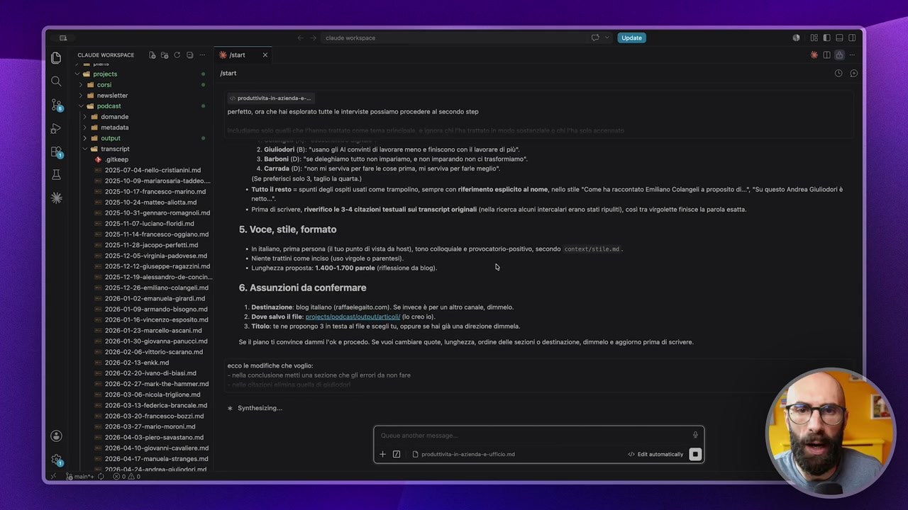
OCR: © ed projpets > all con > al nevsiottr Sed podicost > al domande > al metadata > ai output È è Del transcrpt 2. Glullodori (8): “usano gi i convinti di avorare meno e finiscono con Il avrar di più". + giteop 3. Barboni (D}: "o eleghiamo tutto nen Impariamo, e nor imparando non c rasfermiamo': Li 2026-07-04: nat: crt ‘. Carra (D); ‘non mi serviva per fare la cose prima, mi serviva per farle meglio”. 2028-10-09 mariarosaiataddeo.. (Se praferisci oo 3, tag la quarta) ‘2025-10-17-rancesco- marino. md * Tutto lresto = spunti gl osp usati come trampolino, sempre con riferimento esplicito al nome, nll ste "Come ha raccontato Emilano Colangll a proposito di. Su questo Andrea Glulodori è retto. perfetto, ora che ha esplorato tutte l Interviste possiamo procedere al secondo step 2025-10-24-matteo-ota md ssaa È “ Prima di scrivere, riverifco le 3-4 citazioni testuali su ranscrpt originali (nola ricerca alcuni itercslari eran stati iui) cos tra golett finisce la pro esatta. 2028-11-07iucanoorii md ‘2025-t1-14-francesco-oggiano md Voce, stile, formato 2028-11-28-Jcopo-peret.md * Initatano, rima persona (uo punt i vista da has, ono cola provata poso secondo contert/tite.ni. 2025-52-05 vigna padovse md * Nnt wii come inciso (uso gole o parents) 2028-12-12-iuseppe-ragzznimd “ Lunghezza proposta: 1400-1700 parole (rifessione da bg). DI 2025-12-10-alssando-de-concin. 2025-1226 lano coanglid ‘Assunzioni da confermare 2026-07-02-emanvea-girarci md 2028-01-09- anco. bisogno md 1. Destinazione bog ano (afelglto com). e iiece è per un tro canal, imme 2026-01-16 -incenzo esposito me 2. Dove salvo lle: iisisoodcas totali (0 creo o). pe 3 Tito e ne propongo 3 i testa flo e Sceg tu, pure e hl iù un zione imma. 2028-01-30-giovanno-panvcciimd ‘Se piana ti convince dammi ok e procedo S vuol cambiare quote, lunghezza, ordine della sezioni o destinazione, dimmelo aggiorno prima di scrivere ‘2026-02-06 vttoro-scarano. me 2020:02-18-eni sd ecco le modifiche che voglie: 2026-02-20 iano-di-biasi.m lla conchsione matt una szione che ll eroi da nn fre ‘2026-02-27 -marth- hammer md 2026-03-06-nicolatigione md 2026-03-18 -(derica-brancalemd | 4 Symihesizing. 2026-03-20-trancesco-bozzimd 2026-03-27 -mari-moroni md 2028-04-03: piero-savastano md ‘2028-04-10-giovanni-cavallere mi ‘2026-048-37-manwela-stranges. ma 9096-08-24. + DD pria azonte n
in alcuni casi a me piace farlo su cose molto complesse, gli dico queste sono le modifiche che voglio al piano, riproponimi il piano. Perché? Perché voglio essere sicuro che la seconda versione del piano, o la terza, la quarta, la quinta, perché potete modificarlo tutte le volte che volete voi, sia coerente con le cose che gli ho detto. Quindi che non abbia fatto errori nel comprendere quello che gli ho detto, ma anche che poi la versione modificata del piano abbia proprio senso. Perché magari me la rileggo e dico no vabbè ho fatto una cazzata, sta cosa non va bene. Questo soprattutto quando devo fare delle modifiche al workspace. Per esempio se devo creare delle skill, io uso sempre questa tecnica, esplora, pianifica e segui, e so che dopo per creare la skill ci metterà tempo e la skill è pure molto complessa, perché magari deve scrivere del codice e così via, allora in quel caso io faccio sempre modifica il piano e fammelo vedere. Modifica il piano e fammelo vedere, non dico mai modifica il piano e prosegui. Così lo rileggo, rileggo la seconda versione aggiornata e dico ok vai procedi, ora siamo pronti.
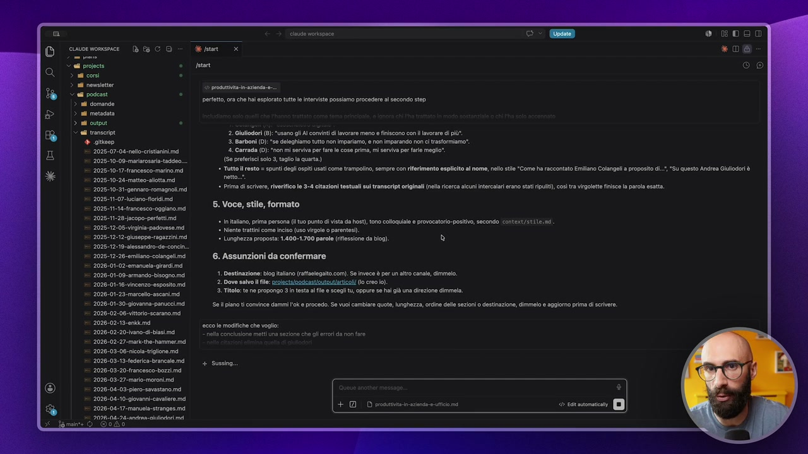
OCR: > ei propcts > adi cons > all newsletter © al podcost > il domande > all metadata > sti cutput Se trnscrpt + ateo ‘2025-07-04-nellocrsinii im 2025-10-09-mariarosari-tadeo.. 2025-10-17-rancesco- marino md 2025-10-24-matteo-aotta ma ‘2028-10-31-gennaro-romagnoli md 2028-11-07 uan ori ‘2025-11-14-trancesco-ogglano md 2025-11-28-jcopo-perfeti.md 2026-12-08 virgni- padovese md 2028-12-12-glusoppe-ragezzinimd 2025-12-10 -aessandro-de-concn ‘2025-12-26-erillano-colangllma ‘2028-01-02-omanuela-grardì mi 2026-01-0-srmando-bisogno md ‘2026-01-16-vinconzo-ecposto md ‘2026-01-23-marcelio-ascani md ‘2028-01-30-giovanna-panvccimd ‘2026-02-06 toro -scarano. me 2026-02-13-enk md 2026-02-20 iano. ‘2026-02-27 mar - ammo md ‘2028-03-08-nicolatrigione md 2026-08-13 -ederica-brancale md ‘2026-03-20.trancesco-bozzi md 2026-03-27 mario moroni md 2028-04-03: pier-savastano md ‘2026-04-10-givanni-cavallere md x 2026-04-17-manuela-stranges md 2076-04-24. mins O odo cause vorapace 2. Glllodori (8): “usano gli A convinti di lavorare meno e finiscono con avrar di più" 3. Barboni (D}: a eleghiamo tutto nen Impariamo, e non imparando non c rasformiamo': ‘4. Carrada (D: “non mi serviva per fre le cose prima, mi serviva per farle meglio”. (Se profereci soo 3, tag la quarta) + Tutto i resto = spunti degl osp usati come trampolino, sempre con riferimento esplicito al nome, nll sto "Come ha raccontato Emilano Colangli proposito di. Su questo Andrea Godi è * Prima di scivere, riverifco le 3-4 citazioni testuali su iranscrpt originali (nel ricerca alcuni itecalari eran stati iui) cosÌ tra vgoltt finisce la prola esatta. Voce, stile, formato * n tallano, prima persona (io punto di vista da host), ono coloquiao e provocatorio posto, secondo Conteit/stit:nd. * Niente tratti como inciso (uso virgole 0 parentesi). Lunghezza proposta: 1.400-1.700 parole riflessione da lo). dè Assunzioni da confermare 1. Destinazione: blog alano (rffalegato. com). Se Invece è per un ro canale, dimmelo. 2. Dove salvo life: proiactsloodcasiouipilanicali ‘reo o) 3. Titolo: te n propongo 3 i testa alle e scegli tu, oppure se hai già una direzione immela Se l piano ti convince dammi ok e procedo Se vuol camblare quote lunghezza, ordine dell sezioni 0 destinazione, dimmelo e aggiorno prima di scrivere. 600 le modiche che voglio: alla conclusione matti una sazione che ol ero da non fre e + DD produttvitaimazionde etto mi < tc atomatcty (0)
Qua metto pausa e vi faccio vedere direttamente quando ha fatto l'articolo finale. Ed ecco qua, ha finito, ci ha fatto il nostro articolo che adesso ci apriamo, ce lo vediamo sempre ovviamente così formatato meglio, spostiamo un po' questo. Qua mi ha proposto pure dei titoli e poi scegliamo quello che vogliamo noi, ovviamente gli avremmo potuto dire pure un titolo che volevamo noi. E qua mi ha fatto le sezioni, vedete ci ha messo le citazioni che gli abbiamo detto, quindi queste sono delle citazioni. E qua ha fatto anche come gli ho chiesto io, quindi è esattamente il rovesciamento che propone Alessandro De Concini che di mestieri insegna le persone, vedete quindi con i riferimenti alle interviste. E Cavaliere ammette candidamente di vederlo sulla propria pelle e così via. Vediamo se ha messo anche la sezione con gli errori da non fare. In conclusione eccoli qua, pure gli errori da non fare, quindi esattamente come gli avevo chiesto io. Ovviamente questa è la versione più semplice, ma avete capito cosa significa concretamente pianificare prima di eseguire, soprattutto per dei task molto lunghi.